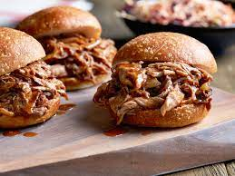

Pulled Pork Sandwich
Home
Chicken Parm
Jason's Egg Sammy

Pulled pork sandiwches are one of my favorite dinners. It is a relatively simple meal that only requires you to cook the pork and add bbq sauce.
Ingredients
- 4 pounds of pork shoulder roast
- 3 cups of barbeque sauce
- 2 twelve-count bags of Hawaiian bread rolls
- olive oil
- salt
- pepper
- light brown sugar
- smoked paprika
Directions
- Whisk smoked paprika, brown sugar, garlic powder, salt, and black pepper together in a large glass or ceramic bowl. Add pork and toss to evenly coat. Cover the bowl with plastic wrap and marinate in the refrigerator for 30 minutes.
- Turn on a multi-functional pressure cooker (such as Instant Pot®) and select Saute function. Heat oil and cook pork in batches until browned, 5 to 7 minutes. Pour in barbeque sauce and water. Close and lock the lid; select Manual function and set timer for 60 minutes. Allow 10 to 15 minutes for pressure to build.
- Release pressure using the natural-release method according to manufacturer's instructions, 10 to 40 minutes. Unlock and remove lid; transfer pork to a separate plate. Reselect Saute function and simmer sauce until thickened, about 10 minutes. Shred pork with 2 two forks; mix with sauce.
- Slice bread rolls in half and fill with pulled pork; cover with tops.